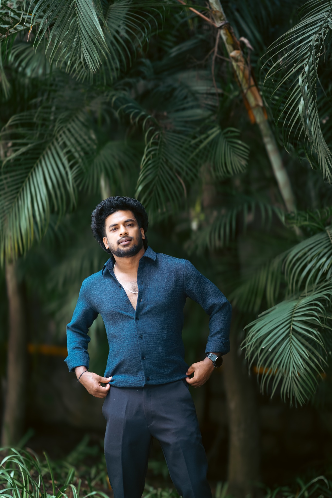

RS Cinemas
Movie production experience with a focus on cinematic storytelling and visual finish.
I shape the mood, depth and emotion of every frame through cinematic color grading and post-production. With 3+ years of hands-on experience, I help films, brands and creators turn their vision into a polished visual experience.

Production experience and branding work — combining storytelling, post-production and a sharp visual eye.
Movie production experience with a focus on cinematic storytelling and visual finish.
Shaping footage, pacing and visuals into a clear, engaging final experience.
Currently working in branding — creating consistent, polished visuals that communicate clearly.
From film frames to brand identities, every detail is shaped with purpose, precision and feeling.
I’m Shreejith Expose, a colorist and visual creative with 3+ years of hands-on experience. I have worked across movie production, editing and post-production, and branding — bringing a considered, cinematic finish to every project. I believe the right visual style should support the story and match the client’s vision.
From skin-tone accuracy and exposure balance to rich cinematic palettes and clean brand visuals, I focus on the details that make work feel professional, memorable and uniquely yours.
A selection of color-grading samples and creative projects — each frame treated with its own visual intention.
Dance sequence with rich costume color and natural outdoor tones.
COLOR GRADING SAMPLEOutdoor scene with a restrained, natural cinematic look.
FILM LOOKCoordinated wardrobe colors balanced with the green environment.
COLOR GRADING SAMPLEIndoor scene with controlled neutral tones and skin color.
SCENE GRADINGComparison clip showing the frame before and after grading.
BEFORE / AFTERStreet footage with daylight, environment and subject separation.
CINEMATIC LOOKExpressive costume, makeup and fine details in a close-up frame.
FILM COLOR PLAY ON YOUTUBE ↗
PLAY ON YOUTUBE ↗ PLAY ON YOUTUBE ↗
PLAY ON YOUTUBE ↗ PLAY ON YOUTUBE ↗
PLAY ON YOUTUBE ↗ PLAY ON YOUTUBE ↗
PLAY ON YOUTUBE ↗Architectural footage with clean contrast and cool, neutral tones.
CINEMATIC LOOKA dedicated collection of color-grading samples, each with its own mood and treatment. Play each clip directly here.
Sample clip showcasing color and mood treatment.
COLOR-GRADED SAMPLESample clip showcasing color and mood treatment.
COLOR-GRADED SAMPLESample clip showcasing color and mood treatment.
COLOR-GRADED SAMPLESample clip showcasing color and mood treatment.
COLOR-GRADED SAMPLESample clip showcasing color and mood treatment.
COLOR-GRADED SAMPLEA look at the same frames before and after grading.
A thoughtful grade guides the eye, defines the mood and gives every scene its own identity while keeping the film visually consistent.
A curated reel of grading work across films, brands, commercials and music videos.
 WATCH SHOWREEL ↗
WATCH SHOWREEL ↗Movie color grading, brand films, commercials, wedding films, short films and music videos.
Want to watch it directly on YouTube?
OPEN YOUTUBE ↗Have a film, brand or creative idea? Let’s shape the look around your vision.
From movie production and editing to brand films and commercials, I’ll help bring your idea to life in a visual style that feels right for you.
START A CONVERSATION ↗